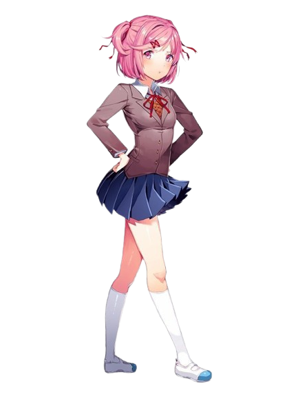
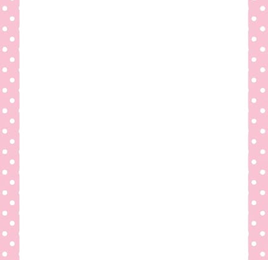
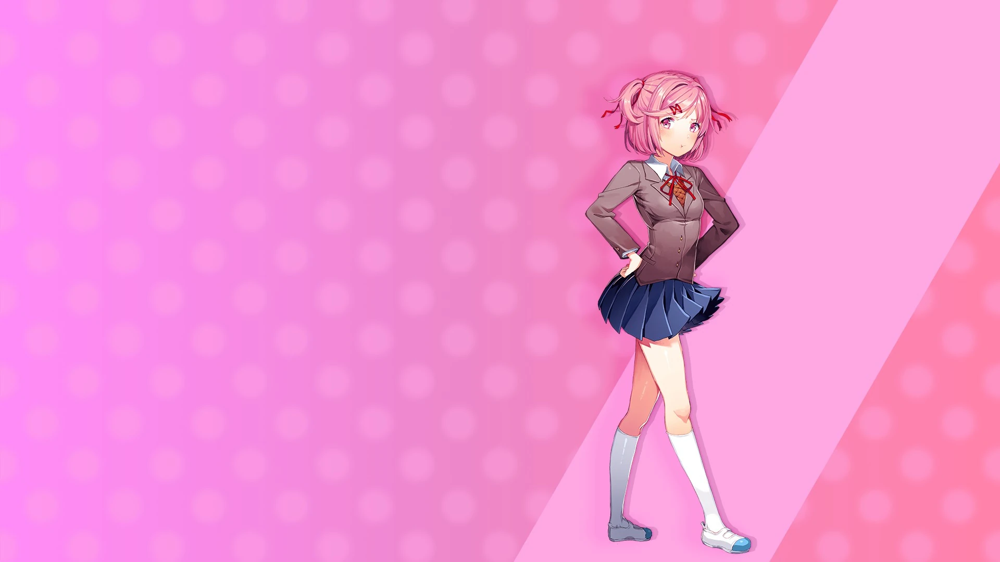

Natsuki


Route de Natsuki
Vidéo explicative
Natsuki est l’un des personnages principaux de Doki Doki Literature Club!. Elle est une jeune fille énergique, directe et assez petite, qui peut parfois paraître agressive ou provocatrice. Elle rejoint le club de littérature parce qu’elle aime lire et écrire, même si elle préfère généralement les mangas aux romans traditionnels. Natsuki possède une personnalité très affirmée et n’hésite pas à dire ce qu’elle pense. Elle peut facilement se mettre en colère, notamment lorsqu’elle a l’impression que les autres ne prennent pas ses goûts au sérieux. Malgré son attitude parfois froide, elle est en réalité sensible et cherche surtout à être comprise et appréciée. Elle aime particulièrement les mangas et les pâtisseries, qu’elle prépare parfois pour les autres membres du club. Derrière son caractère de « tsundere », Natsuki cache cependant une situation familiale difficile qui explique en partie son comportement et son besoin de se protéger. Au fur et à mesure du jeu, son histoire devient plus sombre. Après la mort de Yuri, Natsuki découvre son comportement inquiétant et tente de prévenir le protagoniste. Cependant, Monika intervient et modifie les fichiers du jeu. Elle finit par supprimer Natsuki du jeu, ce qui provoque sa disparition brutale. Cet événement montre que Monika possède un contrôle de plus en plus important sur le jeu et qu’elle est prête à supprimer les autres personnages pour se rapprocher du protagoniste. Natsuki est donc un personnage à la fois énergique, sensible et attachant, dont la disparition contribue fortement à l’ambiance sombre et inquiétante de Doki Doki Literature Club!.